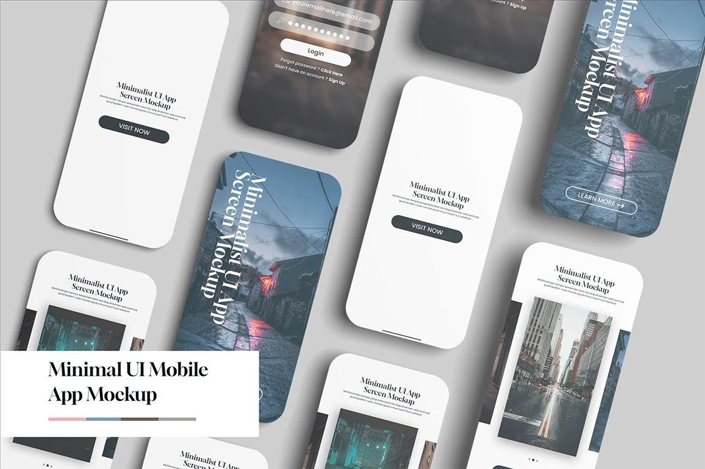

Showcasing Innovation and Impact
A portfolio is a vital window into your ability to solve complex information challenges. At UMSI, our projects span from user research to data analysis. This section presents the core project outcomes you can achieve through interdisciplinary collaboration and technical expertise.
Whether you are pursuing UX design, data science, information analysis, or digital product management, a strong portfolio demonstrates your problem-solving skills, creativity, and ability to deliver impactful results.

Featured Projects

UX Design Research
User experience evaluation of a campus resource access system with qualitative interviews and prototype testing.

Data Analysis Dashboard
Interactive visualization of student engagement metrics using Python and Tableau for the UMSI community.
Building Your Portfolio
Start with Your Best Work
Quality over quantity. Select 3-5 projects that best demonstrate your skills and the type of work you want to pursue.
Tell the Full Story
For each project, explain the problem, your process, your contributions, and the outcome or impact.
Show Your Process
Include sketches, wireframes, code snippets, or research artifacts to demonstrate how you think and work through challenges.
Keep It Updated
Add new projects after each semester. Remove older work that no longer represents your current skill level.
Portfolio Platforms and Tools
Choosing the right platform to host your portfolio can make a big difference in how your work is perceived. Here are some popular options used by UMSI students:
-
GitHub Pages
Free hosting for developers. Great for showcasing code projects, data analysis, and technical portfolios. -
Behance
A visual platform ideal for UX/UI design portfolios. Easy to create case studies with rich media. -
Figma
Collaborative design tool frequently used in UMSI courses. Share prototypes and design systems directly.
Portfolio FAQ
Do I need a portfolio if I am not a designer?
Yes! Portfolios are valuable for all information professionals. Data analysts can showcase dashboards, developers can show projects, and researchers can present findings.
How many projects should I include?
Aim for 3-5 well-documented projects. Each should clearly demonstrate your skills and thought process.
Can I use class projects in my portfolio?
Absolutely. UMSI coursework is highly relevant. Just make sure to describe your individual contributions if it was a group project.
Need Portfolio Guidance?
Schedule a session with a CDO Career Coach to get feedback on your portfolio strategy and content.
Talk to a Career Coach